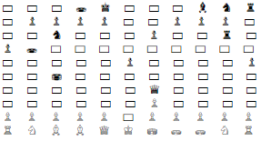
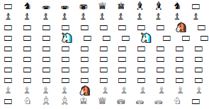

עשיתי לעצמי כדי לבדוק שהלוח תקין אז למי שצריך, תהנו.
board = Board()
board.reset()
print(board)
# (row, column)
pawn0 = board.get_square(1, 0)
pawn0.move(board, (3, 0))
pawn0.move(board, (6, 0)) # No change
pawn0.move(board, (5, 0)) # No change
pawn5 = board.get_square(1, 5)
pawn5.move(board, (4, 5))
pawn10 = board.get_square(1, 10)
pawn10.move(board, (2, 10))
pawn10.move(board, (4, 10))
rook = board.get_square(0, 0)
rook.move(board, (2, 0))
rook.move(board, (2, 9))
knight = board.get_square(0, 1)
knight.move(board, (2, 2))
camel = board.get_square(0, 2)
camel.move(board, (3, 1))
wildbeest = board.get_square(0, 4)
wildbeest.move(board, (2, 3))
wildbeest.move(board, (5, 2))
king = board.get_square(0, 5)
king.move(board, (2, 5)) # No change
king.move(board, (0, 4))
queen = board.get_square(0, 6)
queen.move(board, (3, 3))
queen.move(board, (3, 6))
queen.move(board, (6, 6))
pawn6 = board.get_square(1, 6)
pawn6.move(board, (2, 6))
bishop = board.get_square(0, 7)
bishop.move(board, (4, 3))
bishop.move(board, (7, 6))
pawn_white5 = board.get_square(8, 5)
pawn_white5.move(board, (7, 6))
print(board)

חד קרן: תשנו את הקוד למטה בהתאם לאיך שמימשתם מספר צעדים.
board = Board()
board.reset()
print(board)
# (row, column)
unicorn_black1 = board.get_square(0, 0)
unicorn_black1.move(board, (2, 1)) # 4 steps.
unicorn_black2 = board.get_square(0, 10)
unicorn_black2.move(board, (2, 9)) # 1 step.
unicorn_white1 = board.get_square(9, 0)
unicorn_white1.move(board, (7, 1)) # 3 steps.
unicorn_white2 = board.get_square(9, 10)
unicorn_white2.move(board, (7, 9)) # 3 steps.
print(board)


 לא הייתי בטוחה אם אני צריכה להגדיר כמה צעדים או שילך עד שיתקע או יסיים הלוח
לא הייתי בטוחה אם אני צריכה להגדיר כמה צעדים או שילך עד שיתקע או יסיים הלוח
 )
)